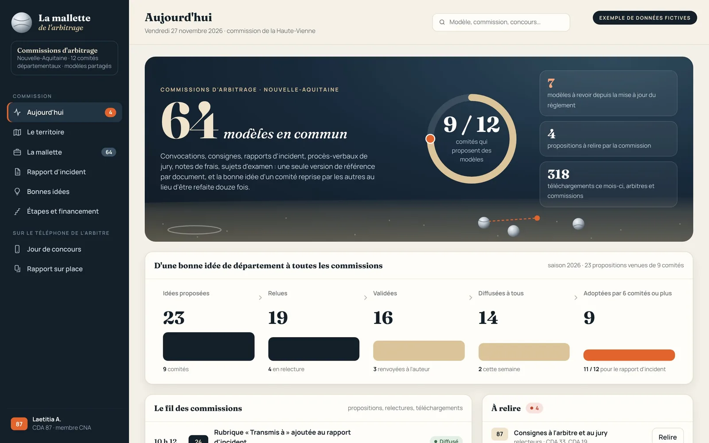
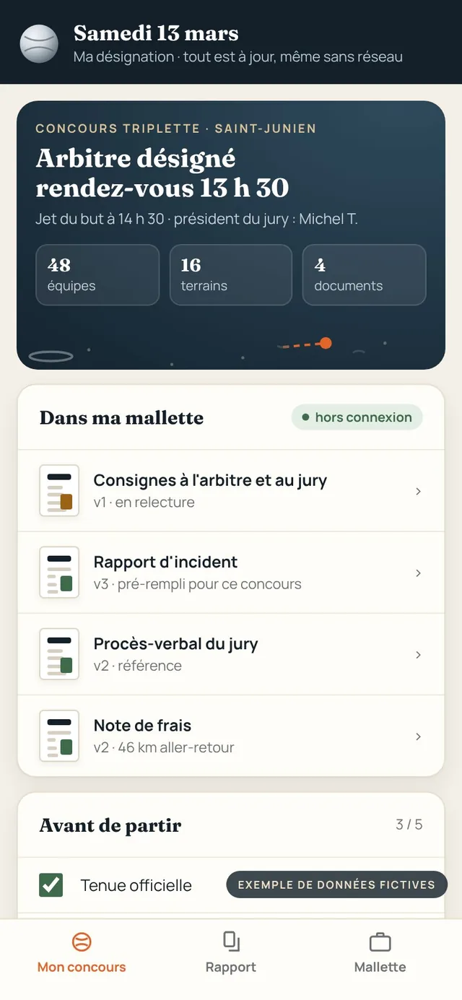
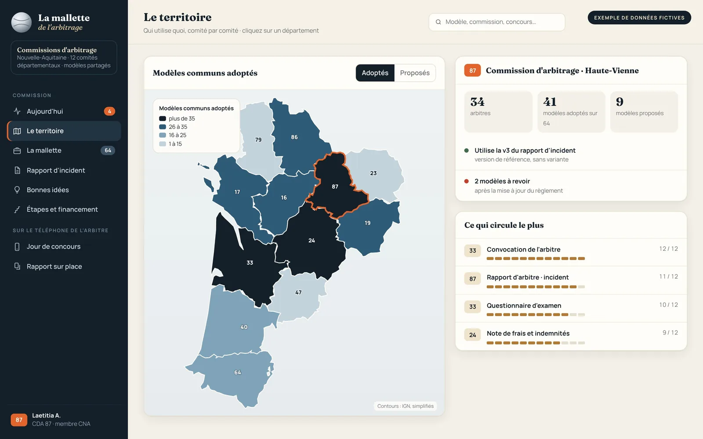
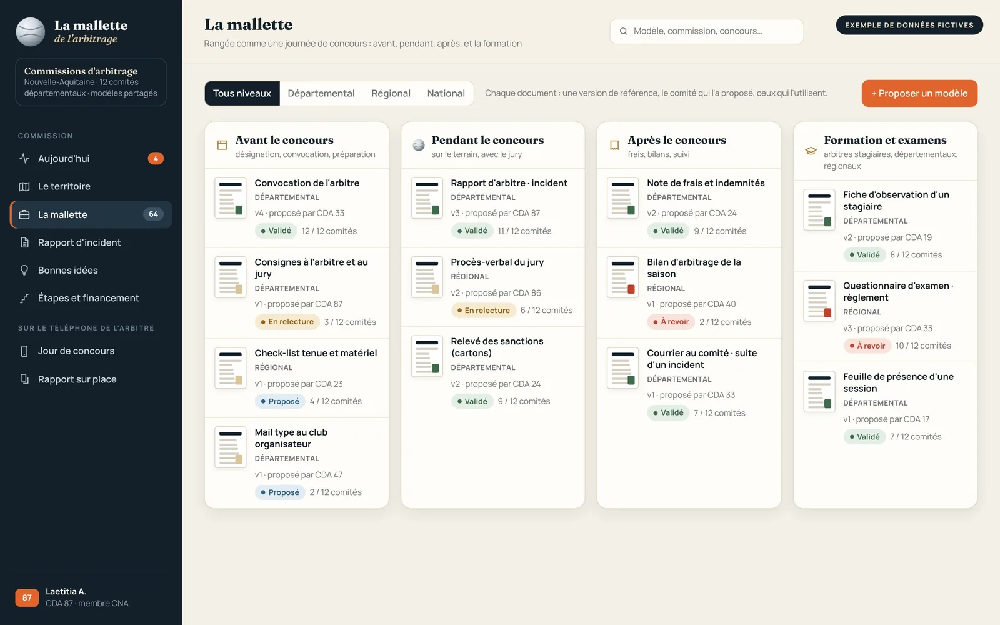
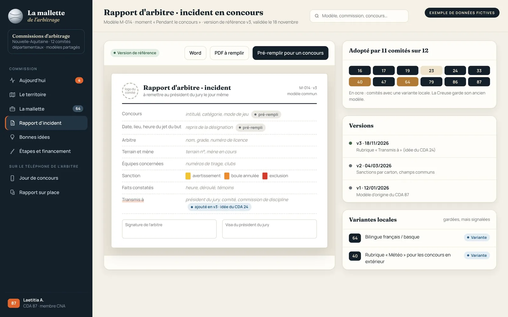
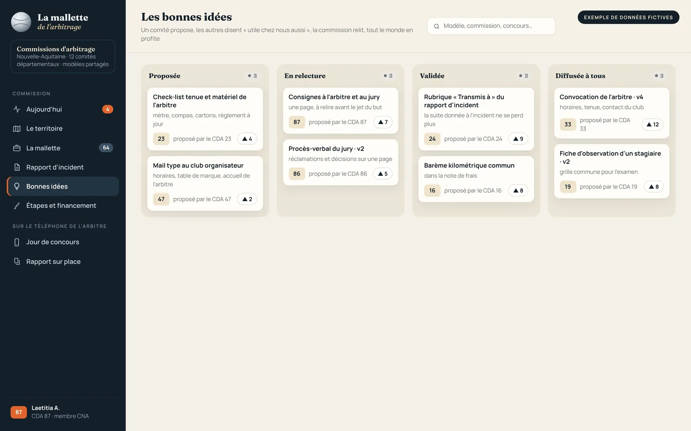
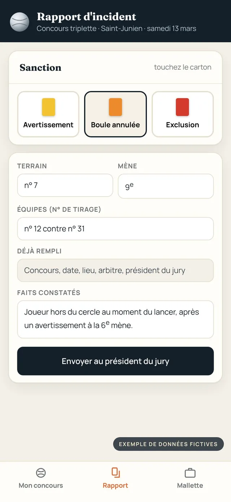

Concept pour Laetitia · commissions d'arbitrage de pétanque
La bonne idée d'un comité, dans la mallette de tous.
Laetitia, vous m'avez écrit que chaque département fait son « micmac » dans son coin et que les bonnes idées ne circulent pas. Voici à quoi pourrait ressembler une mallette commune des commissions d'arbitrage : une version de référence par document, les propositions de chaque comité relues puis partagées, et sur le téléphone de l'arbitre, les documents du concours, même sans réseau.
Concept réalisé à partir de votre message et de ce qui est visible publiquement. Toutes les données affichées sont fictives ; l'exemple prend les douze comités de Nouvelle-Aquitaine, il s'adapte à tout autre territoire.


Actuellement, chaque département fait son micmac dans son coin et nous ne partageons malheureusement pas les bonnes idées.
Des arbitres bénévoles désignés concours par concours, des documents à remettre au jury le jour même, un règlement qui évolue, et des commissions qui refont chacune leurs convocations, leurs rapports et leurs sujets d'examen.
Une mallette commune, rangée comme une journée de concours, où chaque comité propose, relit et reprend les modèles des autres. Et un projet découpé en étapes, finançables l'une après l'autre.
Les modèles de tout le territoire, sur un seul écran
Combien de modèles sont en commun, quels comités proposent, ce qui attend une relecture et ce qui est à revoir depuis la dernière mise à jour du règlement.
- D'une bonne idée de département à toutes les commissions, étape par étape
- Le fil des propositions, relectures et téléchargements
- Les concours de la semaine, avec des documents à jour
Qui utilise quoi, comité par comité
La carte des comités : les modèles communs adoptés, ceux que chacun a proposés, et ce qui reste à mettre à jour. Un clic sur un département ouvre sa commission.
- Les documents qui circulent le plus, et ceux que personne n'a encore repris
- Les variantes locales gardées mais signalées
- De quoi présenter le projet à la commission régionale ou nationale, chiffres à l'appui

Rangée comme une journée de concours
Avant le concours, pendant, après, et la formation des arbitres : chaque document a une seule version de référence, le comité qui l'a proposé et le nombre de comités qui l'utilisent.
- Convocation, consignes, check-list tenue et matériel
- Rapport d'incident, procès-verbal du jury, relevé des sanctions
- Note de frais, bilan de saison, fiches d'observation et questionnaires d'examen

Le rapport d'incident, et son histoire
Le document tel qu'il s'imprime, avec les cartons jaune, orange et rouge, la mène et le terrain. Chaque version est datée, chaque amélioration dit de quel comité elle vient.
- Pré-rempli pour un concours : date, lieu, arbitre, président du jury
- Le logo et l'adresse de chaque comité s'ajoutent tout seuls
- Une variante locale reste possible, bilingue par exemple

L'idée d'un comité profite aux onze autres
Un comité propose un modèle ou une amélioration, les autres disent « utile chez nous aussi », la commission relit et valide, puis le modèle est diffusé à tous.
- Des relecteurs désignés, un délai suivi
- Les votes montrent ce qui mérite d'être fait en premier
- Plus besoin d'attendre une réunion nationale pour partager

Le jour du concours, tout est dans la poche
La désignation, les documents du jour disponibles hors connexion et la check-list avant de partir. Sur place, le rapport d'incident s'ouvre déjà rempli : un carton à toucher, la mène, les équipes, les faits.
- Toujours la dernière version, jamais un vieux fichier
- Tenue, mètre, compas, cartons : rien n'est oublié
- Le rapport part au président du jury en un geste

Comment ça se branche
Vos documents restent les vôtres. La mallette les relie.
On part des modèles que les comités utilisent déjà : rien n'est à réécrire de zéro. Le détail des branchements se vérifie ensemble, outil par outil.
On commence petit, et seulement ce qui sert
Chaque étape fonctionne seule, a son périmètre et son chiffrage : elle peut faire l'objet d'une demande de subvention séparée, et la suivante n'est lancée que si la précédente est vraiment utilisée. Le descriptif de chaque étape peut être repris dans un dossier.
La mallette commune
Les modèles des comités volontaires, une version de référence par document, accessibles à tous les arbitres. Modeste, utile dès la première saison.
Le circuit des bonnes idées
Propositions, relecture par la commission, versions et variantes, alertes après une mise à jour du règlement.
Le téléphone de l'arbitre
Documents du jour hors connexion, rapport d'incident pré-rempli sur place, tableau du territoire.
Un projet à présenter sérieusement
Ce concept est un point de départ : chaque écran s'adapte à vos commissions, à vos documents et à votre territoire, et peut servir de support pour présenter le projet à la commission régionale ou nationale.